Application Settings View
The Application Settings View is used to configure the settings for the QGroundControl application (rather than a specific vehicle). You do not have to have a vehicle connected to change these values.
You can switch between the various pages by clicking the buttons in the left-sidebar.
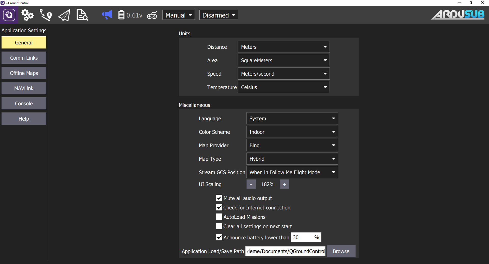
Pages
The following pages are available for configuration:
General Settings Page
The main application configuration settings. These are used to specify: display units, autoconnection devices, video display and storage, etc.
Units
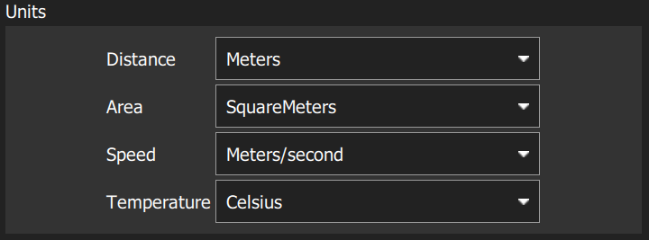
The settings are:
- Distance: Meters | Feet
- Area: SquareMetres | SquareFeet | SquareKilometers | Hectares | Acres |SquareMiles
- Speed: Metres/second | Feet/second | Miles/hour | Kilometres/hour | Knots
- Temperature: Celsius | Fahrenheit
Miscellaneous
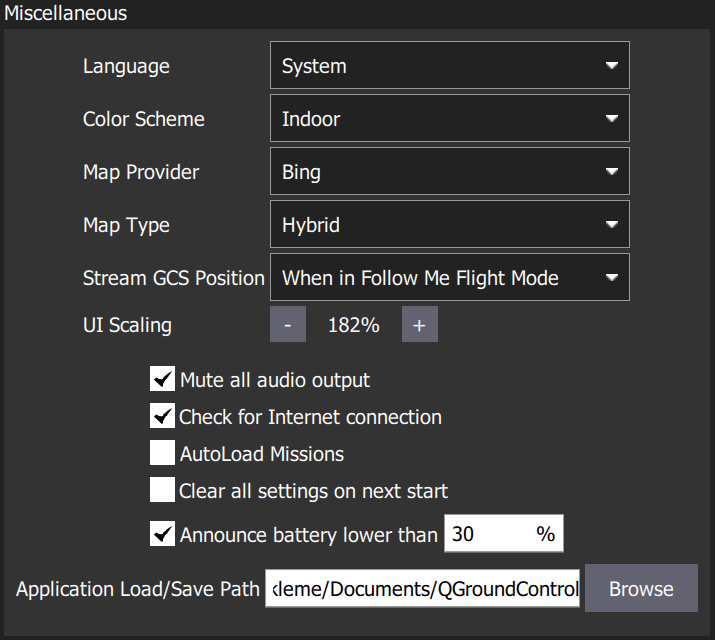
The settings are:
- Language: System (System Language) | Bulgarian, Chinese, etc...
- Color Scheme: Indoor (Dark) | Outdoor (Light)
- Map Provider: Google | Mapbox | Bing | Airmap | VWorld | Eniro | Statkart
- Map Type: Road | Hybrid | Satellite
- Stream GCS Position: Never | Always | When in Follow Me Flight Mode (Does NOT work for ArduSub, PX4 only)
- UI Scaling: UI scale percentage (affects fonts, icons, button sizes, layout etc.)
- Mute all audio output: Turns off all audio output.
- Check for Internet Connection: Uncheck to allow maps to be used in China/places where map tile downloads are likely to fail (stops the map-tile engine continually rechecking for an Internet connection).
- Autoload Missions: If enabled, automatically upload a plan to the vehicle on connection.
- The plan file must be named AutoLoad#.plan, where the # is replaced with the vehicle id.
- The plan file must be located in the Application Load/Save Path.
- Clear all settings on next start: Resets all settings to the default (including this one) when QGroundControl restarts.
- Announce battery lower than: Battery level at which QGroundControl will start low battery announcements.
- Application Load/Save Path: Default location for loading/saving application files, including: parameters, telemetry logs, and mission plans.
Data Persistence
The settings are:
- Disable all data persistence: Check to prevent any data being saved or cached: logs, map tiles etc. This setting disables the telemetry logs section.
Telemetry Logs
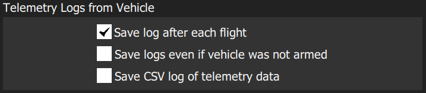
The settings are:
- Save log after each flight: Telemetry logs (.tlog) automatically saved to the Application Load/Save Path (above) after flight.
- Save logs even if vehicle was not armed: Logs when a vehicle connects to QGroundControl. Stops logging when the last vehicle disconnects.
- CSV Logging: Log subset of telemetry data to a CSV file.
Fly View
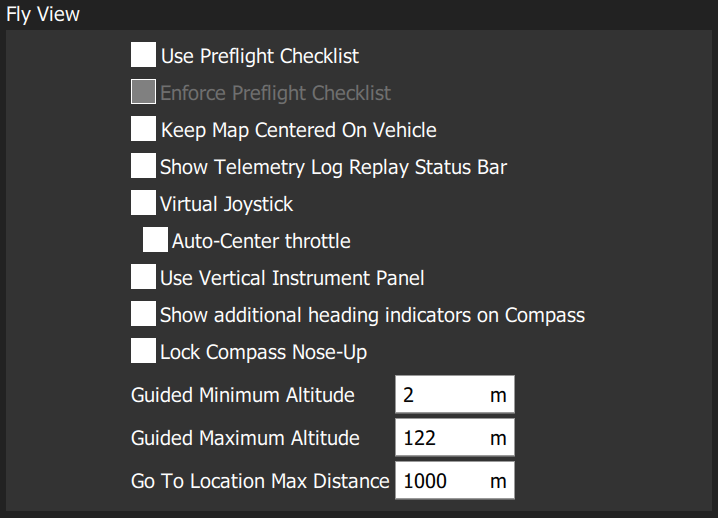
The settings are:
- Use Preflight Checklist: Enable pre-flight checklist in Fly toolbar (Does NOT work for ArduSub).
- Enforce Preflight Checklist: Checklist completion is a pre-condition for arming (Does NOT work for ArduSub).
- Keep Map Centered on Vehicle: Forces map to center on the currently selected vehicle.
- Show Telemetry Log Replay Status Bar: Display status bar for Replaying Flight Data.
- Virtual Joystick: Enable virtual joysticks (Does NOT work for ArduSub, PX4 only).
- Use Vertical Instrument Panel: Align instrument panel vertically rather than horizontally (default).
- Show additional heading indicators on Compass: Adds additional indicators to the compass rose: (only works with an underwater positioning system)
- Blue arrow: course over ground.
- White house: direction back to home.
- Green line: Direction to next waypoint.
- Lock Compass Nose-Up: Check to rotate the compass rose (default is to rotate the vehicle inside the compass indicateor, North Up).
- Guided Minimum Altitude: Minimum value for guided actions altitude slider (Does NOT work for ArduSub).
- Guided Maximum Altitude: Minimum value for guided actions altitude slider (Does NOT work for ArduSub).
- Go To Location Max Distance: The maximum distance that a Go To location can be set from the current vehicle location (in guided mode).
Plan View
The settings are:
- Default Mission Altitude: The default altitude used for the Mission Start Panel, and hence for the first waypoint (Does NOT work for ArduSub).
Autoconnect Devices
This section defines the set of devices to which QGroundControl will auto-connect.

Settings include:
- Pixhawk: Autoconnect to Pixhawk-series device
- SiK Radio: Autoconnect to SiK (Telemetry) radio
- PX4 Flow: Autoconnect to PX4Flow device
- LibrePilot: Autoconnect to Libre Pilot autopilot
- UDP: Autoconnect to UDP
- RTK GPS: Autoconnect to RTK GPS device
- NMEA GPS Device: Autoconnect to an external GPS device to get ground station position (see below)
Ground Station Location (NMEA GPS Device)
QGroundControl will automatically use an internal GPS to display its own location on the map with a purple "Q" icon (if the GPS provides a heading, this will be also indicated by the icon).
You can also configure QGC to connect to an external GPS device via a serial or UDP port. The GPS device must support the ASCII NMEA format - this is normally the case.
Use the NMEA GPS Device drop-down selector to manually select the GPS device and other options:
USB connection:
- NMEA GPS Device: Serial
- NMEA GPS Baudrate: The baudrate for the serial port
Network connection:
- NMEA GPS Device: UDP Port.
- NMEA Stream UDP Port: The UDP port on which QGC will listen for NMEA data (QGC binds the port as a server)
To troubleshoot serial GPS problems: Disable RTK GPS auto connection, close QGroundControl, reconnect your GPS, and open QGC.
RTK GPS
This feature does not work with ArduSub.
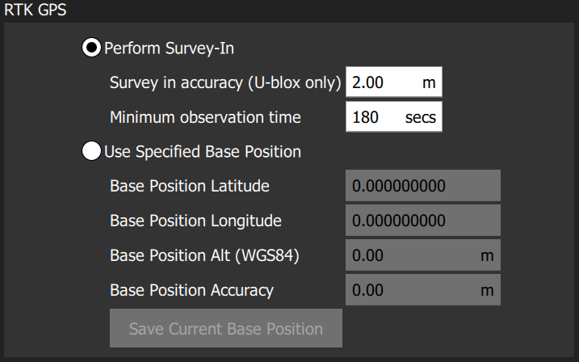
ADSB Server
This feature does not work with ArduSub.
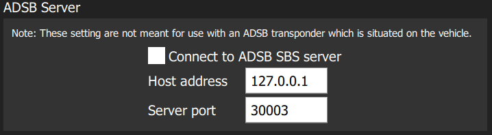
Video
The Video section is used to define the source and connection settings for video that will be displayed in Fly View.
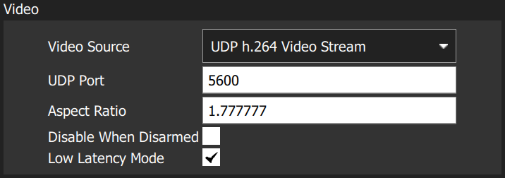
The settings are:
- Video Source: Video Stream Disabled | RTSP Video Stream | UDP h.264 Video Stream | UDP h.265 Video Stream | TCP-MPEG2 Video Stream | MPEG-TS (h.264) Video Stream | Integrated Camera
- URL/Port: Connection type-specific stream address (may be port or URL).
- Aspect Ratio: Aspect ratio for scaling video in video widget (set to 0.0 to ignore scaling)
- Disabled When Disarmed: Disable video feed when vehicle is disarmed.
- Low Latency Mode: Enabling low latency mode reduces the video stream latency, but may cause frame loss and choppy video (this is enabled by default whan an ArduSub vehicle is connected).
Video Recording
The Video Recording section is used to specify the file format and maximum allocated file storage for storing video. Videos are saved to a sub-directory ("Video") of the Application Load/Save Path.
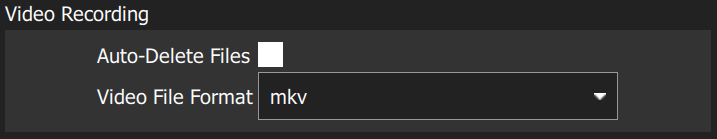
The settings are:
- Auto-Delete Files: If checked, files are auto deleted when the specified amount of storage is used.
- Max Storage Usage: Maximum video file storage before video files are auto deleted.
- Video File Format: File format for the saved video recording: mkv, mov, mp4.
Brand Image
This setting specifies the brand image used for indoor/outdoor colour schemes. The brand image is displayed in place of the default ArduSub logo in the top right corner of the toolbar. It is provided so that users can easily create screen/video captures that include a company logo/branding.

The settings are:
- Indoor Image: Brand image used in indoor color scheme
- Outdoor Image: Brand image used in outdoor color scheme
- Reset Default Brand Image: Reset the brand image back to default.
Comm Links Page
Allows you to manually create communication links and connect to them. Keep in mind that normally this is not needed since QGroundControl will automatically connect to the most common devices.

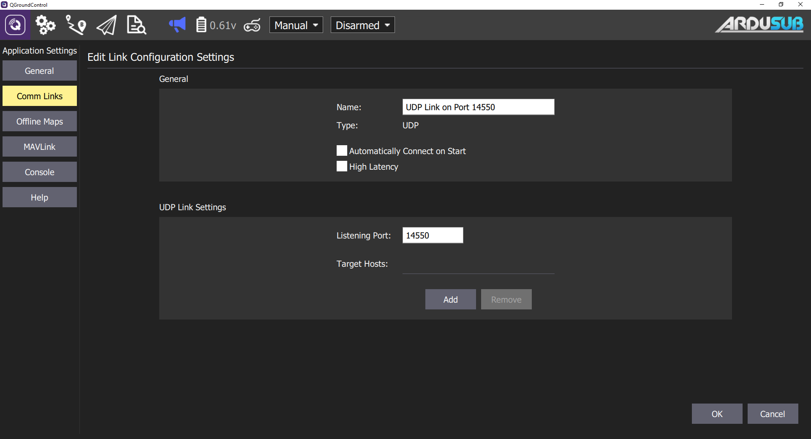
Offline Maps
Offline Maps allows you to cache map tiles for use when not connected to the internet. You can create multiple offline sets, each for a different location.
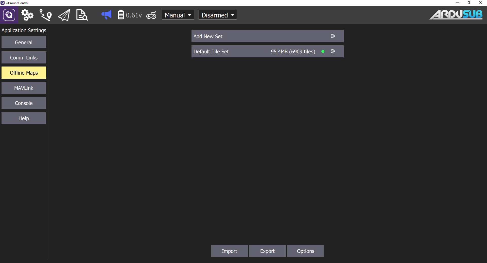
To use:
- To create a new offline map set, click "Add new set".
- From here you can name you set as well as specify the zoom levels you want to cache.
- Move the map to the position you can to cache and then set the zoom levels and click Download to cache the tiles.
- To the left you can see previews of the min and max zoom levels you have chosen.
Mavlink
The MAVLink settings allow you to configure options and view information specific to MAVLink communications. This includes setting the MAVLink system ID for QGroundControl and viewing link quality.
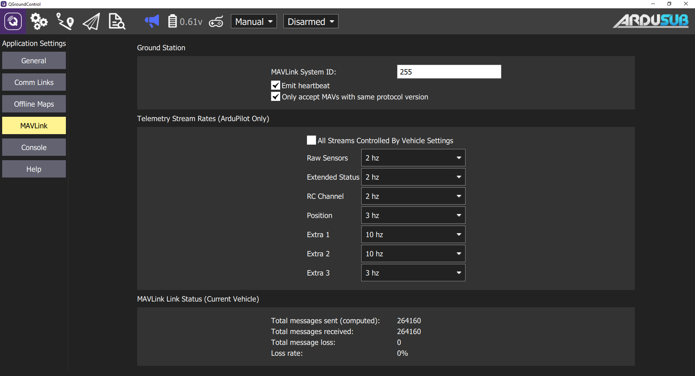
Ground Station
This section sets the MAVLink properties and behaviour of QGroundControl.
- MAVLink System ID: System ID of QGroundControl on the MAVLink network (Default: 255). Vehicles are typically allocated IDs from 1.
- Emit heartbeat: Disable emission of regular MAVLink HEARTBEAT message (Default: True). Generally speaking, you should not turn this off.
- Request start of MAVLink telemetry streams (ArduPilot only): Enable QGroundControl requesting the standard-rate ArduPilot telemetry streams (Default: True). If non-standard rates are required (e.g. if the vehicle is connecting over a slow link) then you can disable starting the standard streams so that the vehicle can control streaming rates.
- Only accept MAVs with the same protocol version: Set true to only connect to MAVLink 1 or to MAVLink 2 vehicles (Default: True).
Telemetry Stream Rates
This section sets the stream rates of the data coming from the vehicle.
- All Streams Controlled by Vehicle Settings: Defaults to values set by SR"X"_ parameters.
- Raw Sensors:
- Extended Ststus:
- RC Channel:
- Position:
- Extra 1:
- Extra 2:
- Extra 3:
Link Status
This shows the status of MAVLink message transfer over the communications link. A high Loss rate may lead to protocol errors for things like parameter download or mission upload/download.
Console
Used to capture application logs for help with diagnosing application problems.
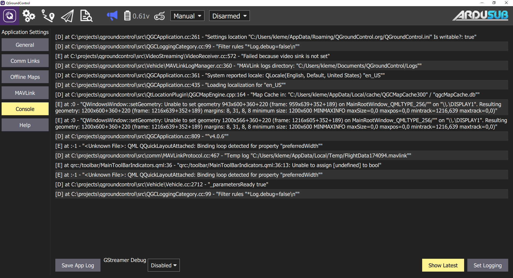